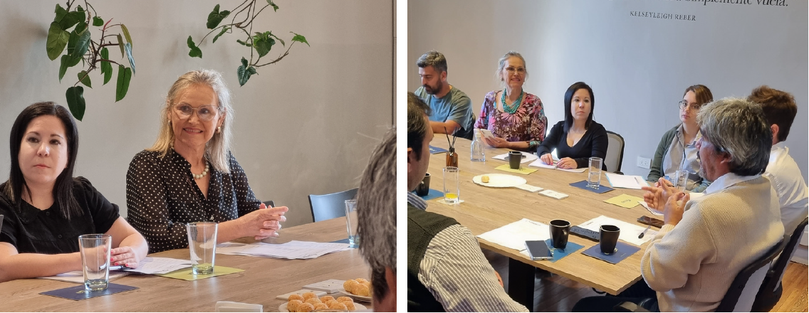
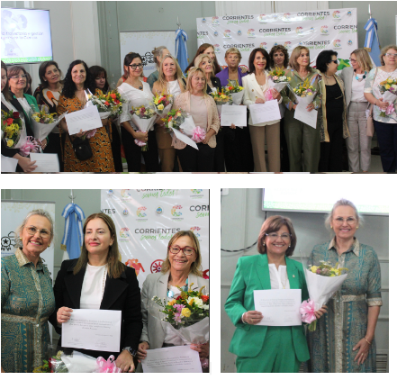
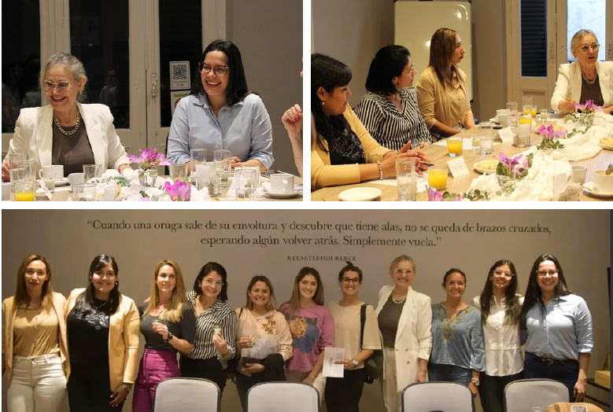
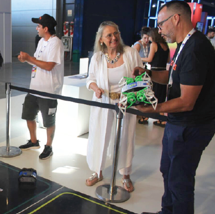

Actividades de Articulacion
Registro histórico de actividades · 2022–2023


MESA DE ECONOMÍA DEL CONOCIMIENTO
La mesa de economía del conocimiento implica un espacio de debate y trabajo colaborativo a partir de los cuales se busca canalizar las demandas del sector y generar actividades que contribuyan a la promoción de capacidades tecnológicas . Integran este espacio la Municipalidad de Corrientes, POLO IT, Instituto Nacional de Tecnología Industrial (INTI), Cámara de Blockchain y UNNE.


RECONOCIMIENTO A LA TRAYECTORIA DE LAS MUJERES EN CIENCIA
El objetivo de dicho evento fue distinguir a las Mujeres Correntinas que se destacan por su
labor y gestión en
actividades científicas y que además llevan más de dos décadas formándose y formando
científicos en toda la provincia.
Esta propuesta de reconocimiento se enmarcó en el lema de la ONU por el Día Internacional de
la Mujer 2023, “Por un
mundo digital inclusivo: Innovación y tecnología para la igualdad de género”, en consonancia
con el tema prioritario del
sexagésimo séptimo período de sesiones de la Comisión de la Condición Jurídica y Social de la
Mujer: “La innovación y el
cambio tecnológico, y la educación en la era digital para alcanzar la igualdad de género y el
empoderamiento de todas
las mujeres y niñas”.
29 May. 2023


DEBATES SOBRE EL ROL DE LAS MUJERES EN LA GENERACIÓN DE INNOVACIONES CIENTÍFICAS - TECNOLÓGICAS
Durante esta jornada mujeres comprometidas con el bienestar de la comunidad se unieron para
construir lazos y fomentar
la colaboración entre la ciencia y el Concejo Deliberante de la Ciudad de Corrientes.
Compartimos ideas, visiones y determinación para identificar proyectos
científicos-tecnológicos que beneficiarán a
nuestra comunidad.
Mayo 2023


ECONAR
Participamos en la primera Feria Argentina de EconAr y fuimos parte de la conformación del
Consejo Federal de Economía
del Conocimiento.
El objetivo fue consensuar políticas para el sector entre todas las provincias del país.
EconAr se realizó concentrando empresas, emprendedores, startups de software, bio y
nanotecnologías, aeroespacial,
satelital, videojuegos, audiovisual y servicios profesionales basados en tecnología, entre
otros.
Este programa tiene como objetivos principales promover la federalización del Sistema Nacional
de Ciencia, Tecnología e
Innovación (SNCTI), fortalecer una distribución equitativa de las capacidades científicas y
tecnológicas del sistema en
el territorio nacional, articular las necesidades y prioridades establecidas por los gobiernos
provinciales, con los
recursos y capacidades de las universidades y de los distintos organismos de ciencia y
tecnología.
Mayo 2023